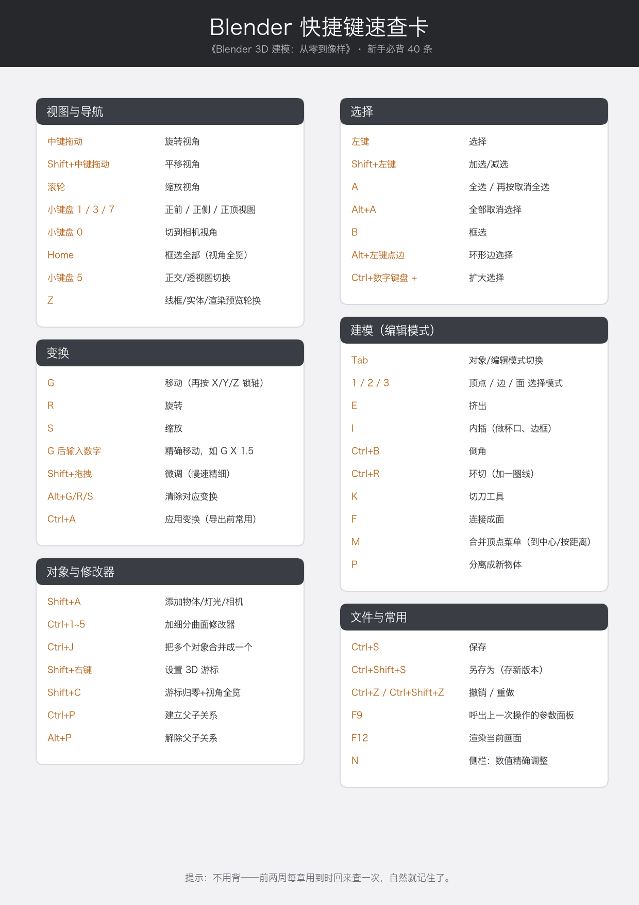

附录 A 快捷键速查卡
打印版卡片图（按 A4 整页打印）：

图 100 全书快捷键速查卡（A4 打印版）
以下是同一份内容的文字版，方便复制和检索。
视图与导航
| 按键 |
作用 |
| 中键拖动 |
旋转视角 |
Shift+中键拖动 |
平移视角 |
| 滚轮 / 中键滚动 |
缩放 |
小键盘 1 / 3 / 7 |
正前 / 正侧 / 正顶视图 |
小键盘 0 |
相机视角 |
小键盘 5 |
正交 / 透视切换 |
Home |
视角全览 |
Z |
着色模式轮换（线框/实体/材质预览/渲染预览） |
N |
侧栏（精确数值面板） |
T |
左侧工具栏收放 |
选择
| 按键 |
作用 |
| 左键 |
选择 |
Shift+左键 |
加选 / 减选 |
A |
全选（再按取消） |
Alt+A |
全部取消选择 |
B |
框选 |
Alt+左键点边 |
循环边选择（整圈边） |
Ctrl+小键盘+ |
扩大选择 |
变换
| 按键 |
作用 |
G |
移动；后接 X / Y / Z 锁轴 |
R |
旋转；后接轴与角度 |
S |
缩放 |
G X 2 Enter |
沿 X 轴精确移动 2 米 |
Shift+拖动 |
变换中微调（减速） |
Alt+G / R / S |
清除对应变换 |
Ctrl+A |
应用变换（导出前必做） |
Shift+D |
复制物体 |
X |
删除菜单 |
编辑模式
| 按键 |
作用 |
Tab |
对象 / 编辑模式切换 |
1 / 2 / 3 |
顶点 / 边 / 面 选择模式 |
E |
挤出 |
I |
内插 |
Ctrl+B |
倒角 |
Ctrl+R |
环切 |
K |
切刀 |
F |
连接成面 |
M |
合并顶点菜单（按距离等） |
P |
分离成新物体 |
O |
比例编辑开关 |
Shift+N |
重算法线（修黑面） |
A → M → 按距离 |
网格大扫除（合并重叠顶点） |
对象与修改器
| 按键 |
作用 |
Shift+A |
添加物体 / 灯光 / 相机 |
Shift+C |
游标归零 + 视角全览 |
Shift+右键 |
设置 3D 游标 |
Ctrl+1 ～ Ctrl+5 |
快速安装对应等级细分曲面修改器 |
Ctrl+J |
多个对象合并成一个 |
Ctrl+P / Alt+P |
建立 / 解除父子关系 |
F2 |
重命名 |
M（物体模式） |
移入集合 |
文件与其他
| 按键 |
作用 |
Ctrl+S |
保存 |
Ctrl+Shift+S |
另存为（存新版本） |
Ctrl+O / Ctrl+N |
打开 / 新建 |
Ctrl+Z / Ctrl+Shift+Z |
撤销 / 重做 |
F3 |
操作搜索（“这功能在哪”的万能钥匙） |
F9 |
最后一次操作的参数面板 |
F12 |
渲染当前画面 |
Ctrl+Q |
退出 |
💡 速记法：一天用一个区，一周自然成肌肉记忆。别背——用。